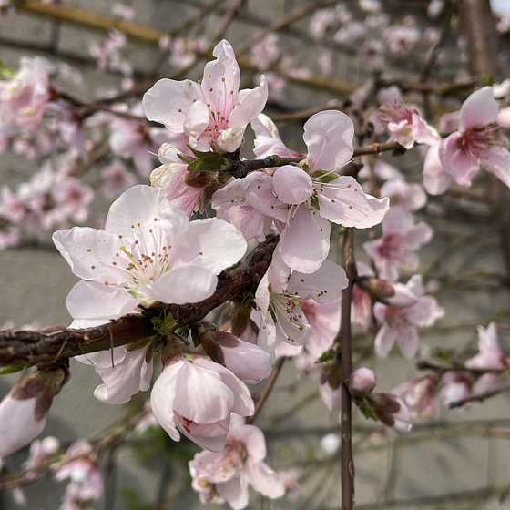
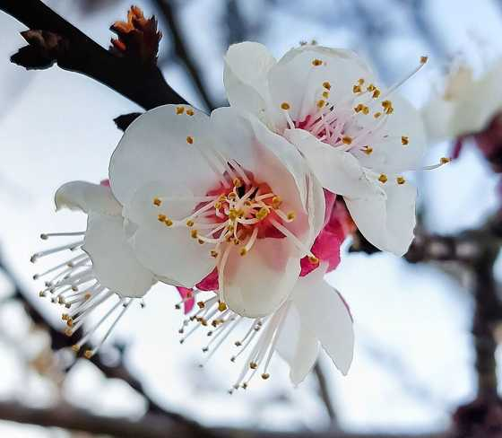
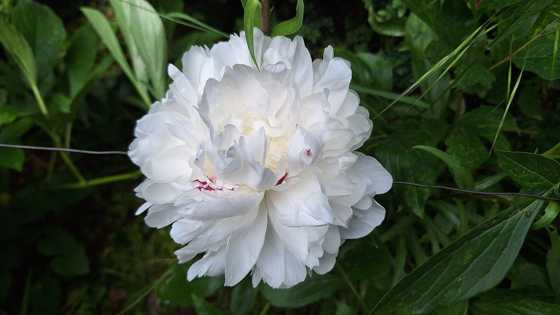
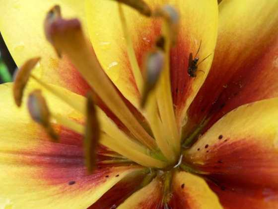
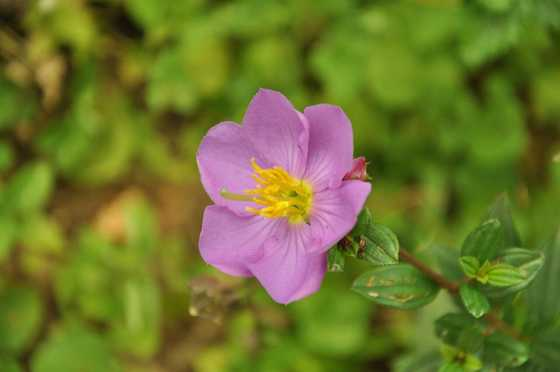
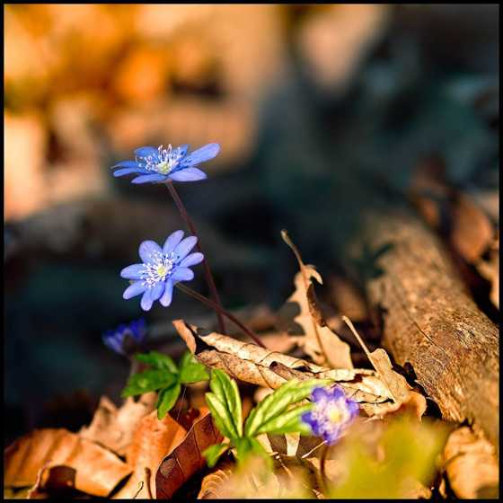
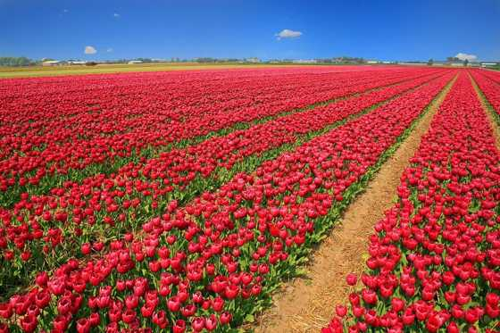
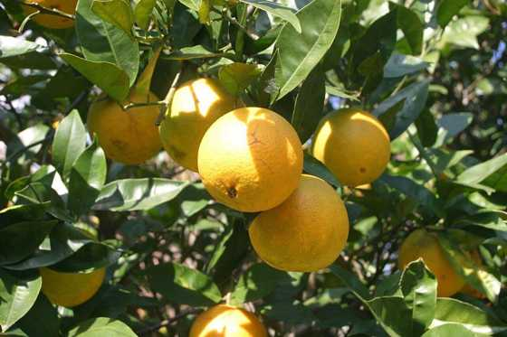
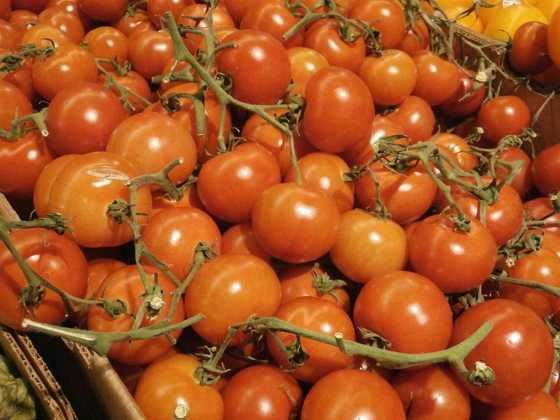
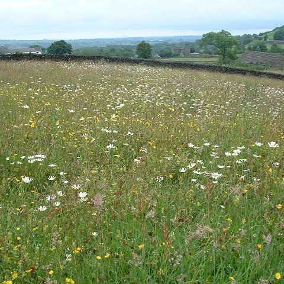

ABOUT
店名にこめられた二つの想い
「花」は、店主の錦織さんが好きなドライフラワーのこと。「果実」は、農家さんが作る旬の野菜や果物をたっぷり食べてほしいという思いから。店内にはドライフラワーやアンティーク雑貨が飾られています。
調理師として働いたのち、「調理師免許がもったいない」というご主人の言葉をきっかけに自分のお店を開き、現在は妹さんと一緒に営んでいます(2024年6月オープン)。「無理なく、出来る範囲で」お客様に喜んでもらえる料理を、という考えが紹介されています。
出典は制作メモに記録しています。店名の由来などの解釈はお店の公式説明ではなく、紹介記事に基づきます。







MENU
季節の花の名がつくプレートと、カフェタイム
紹介記事では、和と洋のプレートランチに花の名前がつけられ、カフェタイムにはスイーツやドリンクが楽しめるとされています。内容は季節で替わるため、最新情報はInstagramでご確認ください。

和プレート・洋プレート
季節の食材を使った品数豊富なランチ。
価格: 準備中
お子様ランチ
小さなお子様向けのメニューもあるとされています。
価格: 準備中
スイーツ・ドリンク
プリンやスイーツプレートなどのカフェタイム。
価格: 準備中



| 営業時間 | 準備中 |
|---|---|
| 定休日 | 準備中 |
| 電話 | 準備中 |
VOICE
お客様の声(イメージ例)
ドライフラワーに囲まれた席で、ゆっくりランチ。野菜がたっぷりで、からだが喜ぶ感じがしました。
食後のプリンまで満足。子どもと一緒でも気兼ねなく過ごせて、また来たいと思いました。
花の名前のついたプレートが季節ごとに楽しみです。お店の雰囲気もかわいらしくて落ち着きます。
上記は制作側が作成した創作のイメージ例で、実在のお客様の声ではありません。
